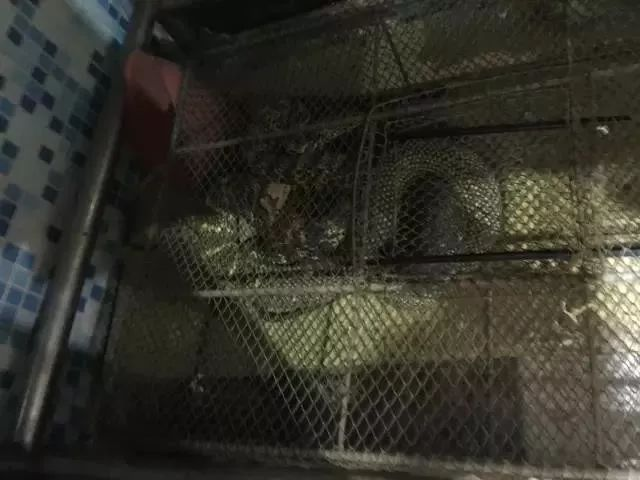
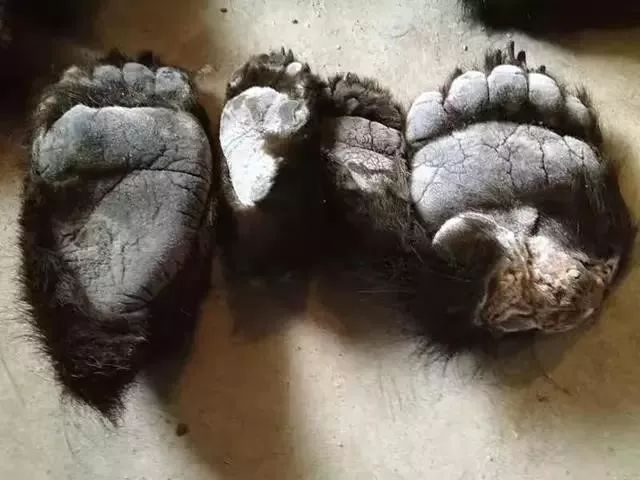
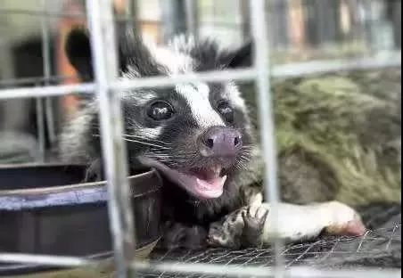

野味消费：病毒突变的“祸根”
原文链接 备份链接 SARS之后，我们以为人们对野味的消费会减少很多，没想到最近几年，这种需求又在不断增加，消费的种类也呈现不断扩大趋势。然而，从猎捕到运输、加工、售卖下的每个环节，也使得病毒在传播过程中不断发生变异。 记者 | 王珊 王 …

文|王一然
编辑|胡大旗
“这道菜叫什么？”
“不能说。”
这家餐厅看上去没有任何特别，普通大排档，招牌上都是家常菜和烧烤类食物，夏日，外面摆满塑料椅子，一楼是大厅，二楼有五六个包间。林建安30岁出头，四五年前负责公司对外商务，厦门市区美食繁杂，客户却挑了这个快到郊区的老旧餐馆。林建安仔细看桌上新端的菜，依旧十分普通：餐具是南方餐馆炖肉常见的锅，下面放着电磁炉加热；肉香也没有奇特之处，锅盖揭开，汤偏乳白色，上面有零星油花，一团红白肉挤在一起，周围裹着像萝卜块一样的辅菜。“不就是炖肉吗？”林建安和公司同事都是第一次去，对方食客们却蠢蠢欲动。
“总得知道是什么肉吧？”动筷前，他还是忍不住好奇。
再三询问后，服务员压低声音：“猪肉炖老虎肉。”
林建安吓了一跳。他尝了一块，吃不出两种肉差别。“总不能去人家后厨看有没有老虎皮。”他回忆，老虎没有在餐桌上独树一帜，很快一条“龙”摆了上来，分两种做法，一盆汤，一盘煎炸的带鱼排状野味。“这是大王蛇，这么大条很难得的。”买单时，林建安“有些站不住”，桌上“一龙一虎”要4000多块，后来他才知道这些神秘餐馆的规矩：野味要熟客带着来点，不熟的人不要问菜。
享受野味或许是一些餐馆老板眼中老饕与普通食客的区别。老板徐舒经营一家北方粤菜酒楼20几年，菜单分成两种：一种在桌子上，旁边纸笔可供写菜；一种在心里，只有“同好”才会直接找老板点菜——厨房门口大鱼缸下，油污棉布帘子掀起，铁网笼子在昏暗里斑驳，蹲下脸凑近，里面黑绿相间，盘了几圈，是条手臂粗细的蛇。“这个很滋补的。”徐舒是潮汕人，酒楼家族式经营，野味稀少珍贵，“只给懂的客人。”
陕西省林业人员秦刚负责掀翻这些“野味餐桌”，但“有市场就有人会铤而走险”。全国森林公安机关曾在2018年4月1日至5月31日开展专项打击行动，共办理各类案件3.6万余起，其中收缴各类野生动物7.7万余头（只），涉案金额近3亿元。秦刚烦恼：“野味范围不只是国家保护动物，哪怕非典之后，果子狸都还有人吃，野味已经成了很多人的饮食习惯。”

徐舒酒楼的蛇笼。王一然 摄
“山珍海味”
“天上不吃飞机，地上不吃汽车。四条腿不吃桌子，两条腿不吃同类。”资深野味食客们味觉灵敏，但胡峰尝不出来大部分味道。他35岁，是某医疗公司公关中层，经常接待外地客户，接风请客往往成为难题，“现在这么方便，人家都想吃口新鲜的，要有本地特色。”
胡峰不了解野味，只看菜的价格，越贵客户吃得越满意。前年冬天，一位东北客户自带食材加菜，包着厚厚一层黄油纸，让胡峰安排一家熟人餐馆，肉一上来，几乎都是瘦肉，客户夹一大块到他碗里：“先别问，吃了再猜！”碍于面子，胡峰尝了一口，干柴难咽，对方告知是鹿肉。“那个时候人家问你，就得说好吃，鹿肉那得多贵？”胡峰干笑两声，“这是显示身份，不在于吃啥。”
除了应酬，野味的地位或许源于高昂的价格、稀少的货源和“没吃过”的神秘感。陕西安康的黄师傅早年是村里的老猎户，“野鸡、野猪这些以前我们都吃腻了，现在搞个农家乐，高档起来了，来旅游的大城市人还都当是好东西。”黄师傅说，有的游客特意到村里来买，怕在外面吃上当，餐馆收相应的加工费，一些附近村民也学会了宣传：纯神农架大山深处无污染走地野山鸡。到了旅游旺季，连鸡蛋也被抢购一空。
有些野味是口口相传的盘中珍馐。林建安在浙江海边长大，觉得东星斑是餐桌上海味名贵，“不在于价格，要会吃。”福建朋友让他尝试一种叫“土龙”的海鱼，“听说蛋白质特别高。”林建安说，土龙鱼汤十分粘稠，比一般海鱼要鲜很多，大土龙鱼常常有价无市，是很多人逢年过节送礼的“排面”，许多外地客户也慕名而来，指名尝鲜。
也有人面对当地饮食文化不敢动筷。曾出差去云南的山东人小肖曾被当地的特色菜单“吓哭”，“全是虫子！还有我们老家那种‘豆虫’，绿色的肉呼呼的。”泉州人何翔每次都给北方朋友推荐当地特产土笋冻，每次只要知道里面有虫子，对方多半吓得不敢吃。土笋冻主要原料是一种蠕虫，熬煮冷却后凝结成褐色半透明的果冻状。“这个是好东西啊！特别补身体。”何翔觉得土笋冻已是当地特色家常菜，算不上野味。
广东揭阳水产老板吴晗对虫类见怪不怪，他快50岁，曾在深圳罗湖区有家海鲜铺面，他解释道：“我们吃的蟑螂不是那种害虫，是水蟑螂。”事实上，水蟑螂是一种龙虱，属于水生昆虫，可以熬汤或油炸，是广东某些地区的特色风味。“滋阴补肾，不过很多外地人不敢吃。”吴晗说，干龙虱能卖到一百多块一斤，野生的更是供不应求。
滋补让野味在一些食客们心中无可取代。在武汉做生意的徐景曾去过一家野味夫妻店，店面不大，大多都是回头客，野味可以自由搭配，菜一上来，蛇炖甲鱼，朋友保证“绝对有特色”；老林业人员秦刚保护野生动物多年，经常与工商等部门一起暗访餐馆，大巴山区附近城市，野味馆子竞争激烈，菜名别出心裁，形状也尽量雕琢精美。
“菜单看不出来，他们取的皇帝贵妃名字或者隐晦的成语，得端上来才知道。”秦刚解释，“龙凤汤”就是蛇炖野山鸡，“龙虎斗”是蛇炖猫。酒楼老板徐舒说，“鳌拜擒王”是甲鱼炖老虎肉，“雪山飞狐”实际上是以炸幼蝎为主菜。“野生动物平时生活在山林里，吃的东西也是纯天然的。很多人觉得它们就算没有药用价值，吃了对身体也有好处。”秦刚说。
林业人员秦刚把吃野味归结于“有钱烧的”。南方的獐子学名原麝，一些农村地区红白喜事，獐子肉代表主人家的富裕和对来宾的尊重；在陕西东南部地区，麂肉也混在普通市场里，成为农家菜“贵客菜”，是野味热门。林业部门查处严，贩卖者十分警惕，一般都等有需要者主动询问，才会搭话。还有人的舌头被娃娃鱼养刁，驱车到西宁换口味，跑长途的司机黄师傅说，青海湖湟鱼是国家二级保护动物，已经严禁捕捞，但有很多游客“不在乎钱，只想尝尝什么味道”，黄师傅说，在青海湖附近，仍有很多打着湟鱼招牌的小餐馆。

内蒙古走私案藏在汽车轮胎里的熊掌。图片来源于网络
口腹之欲
野味餐桌另一头是铤而走险的偷猎者和野味商贩。
大巴山脉有“千里巴山”之称，陕西、四川、湖北三省交界处，崇山峻岭险立，云雾料峭，苍翠叠嶂，除了偷猎者与林业人员，很少有人能在这片野生动物天堂里辨别出几根不起眼的电线，线路埋在树枝残叶中，发电装置藏在隐蔽之处，白日里像藤索般普通，夜幕降临，开关被按下，只要有野生动物经过，瞬间万伏左右的高压可以轻松打晕一头成年黑熊。秦刚介绍，这种机器叫“电老虎”，曾经还发生过误伤打死人的事件。普通林区每个林业人员分管面积大概是一万亩，每个月至少要巡山10次，每天都要写工作日志。每到野生动物交配季节，大概三四月份，一些偷猎者还会带一种诱导仪，可以向雄性动物发出模拟的雌性动物信息素，引它们上钩用网捕杀。
重赏之下必有“勇夫”。据知情人士介绍，黑市交易不只可以现场买卖，有些购买者出高价，指定动物交付定金，有些摊位是附近农户，“靠山吃山，靠水吃水”，而有些大规模的商贩则有自己的渠道网，能进货当地没有的野味：一只活野生黄鼠狼要2000块，孔雀800多一只，鹿筋虎骨、狼牙狐皮，黑市上，野生动物们四肢百骸被拆解分类，生死都有明码标价。
国家二级保护动物穿山甲被称作“一身都是宝”，鳞片和肉都可入药。去年3月，中越海关联合在越南海防市一个申报为进口塑料粒的货柜中查获穿山甲鳞片8.25吨，这意味着约16000只穿山甲被杀害。
一些人笃信偏方，相信“以形补形”，比如“野刺猬心可以治心脏病”、“雄鹿鞭可以壮阳”，据知情人士介绍，黑市中熊油一直是“治疗风湿类疾病佳品”，据说将油涂抹在患处，用火烤就可以治病。“秋冬黑熊最值钱，囤膘后很肥，熊掌、熊肉和熊油都能卖。”
还有人则“视死如归”，一位洞庭湖渔业人员介绍，非法捕捞屡禁不止，长江刀鱼最高时一小条就能卖一千多块，有人冒着触犯刑法的风险捕杀国家二级保护动物江豚买卖交易；还有人则高价想尝豚鱼肉，“一口河豚，百鲜无味”，去年5月，浦东书院镇一名渔民将2条野生河豚卖给一名自称“老手艺”的厨师，其食用后中毒死亡。由于体内含有剧毒神经毒素，卫生部相关规定中明确规定河豚鱼不得流入市场，并禁止供应河豚鱼及其盐腌制品。
在林业部门工作20多年来，果子狸是秦刚印象最深的野生动物之一。非典时期，2004年1月，广东下达了“果子狸捕杀令”，在5天内杀灭所有果子狸，无论活的死的、生的熟的，都要立即进行封存并统一杀灭销毁。“当时我们这里落实到人头严查，就像看到瘟神一样。”
秦刚还曾没收过一对熊掌，“长着毛，比人的手脚短、宽一些。”秦刚说，餐馆一般用来清蒸红烧，藏在专门的冰柜里，只给熟客，两只熊掌可以卖到一万多块。
林业人员的重要依靠之一是暗线村民，他们洞悉偷猎家庭行踪，可以举报线索。护林站是下山的第一道检查，有人背着动物下山，秦刚时常装作买家问：“你咋证明这是麂子肉？”对方把袋子漏出一角，特有的腕部白毛显露出来，确定后，秦刚才表明身份。有些农户不懂《野生动物保护法》，被发现家里冰柜藏有三种野生动物肉后，偷猎者妻子喝了农药：“你要抓人我就不活了！”秦刚只得把她送进医院。
村里交通闭塞，很多农户不直接接触黑市，有“二道贩子”定期来收购，价格浮动很大。麂肉以黄麂最贵，紧俏时能到一百多一斤，但转手在黑市上价格就可以涨两倍。等到餐厅里，价格可以再翻两三倍。本地餐馆能认出检查部门的人，秦刚他们只好突击检查冰柜，但有时野生动物被转移得很快，很多人就藏在私家车后备箱里。“只能一辆一辆查。”秦刚说，非典时，果子狸是重点检查对象；禽流感时，一切禽类养殖手续都要一再检查；非洲猪瘟时，县城里设了四道关卡。但无奈的是，“查得越严野味卖得价格越高，越有人买。”
秦刚更没想到，越过山岭重重，邻省湖北省十堰市某县，野生动物肉“像大白菜一样卖”。前几年，他到过当地普通的菜市场，发现在陕西三令五申严查的麂子肉明目张胆出现在案板上，还有很多其他野味。“那里也属于秦巴山区，野生动物是活的，今天在陕西，明天就可能跑到湖北，在我们这里都当自己孩子一样保护对待，怎么过去就成了别人的盘中餐？”回忆起来，秦刚还是十分沮丧，回去后，他向上级主管单位打报告，希望能进行省际沟通。

人类感染SARS病毒的中间宿主果子狸。图片来源于网络
死神的使者
生与死，健康与病重，希望与绝望，这些在野味面前或许只有一线之隔，只要屠宰不当，贪嘴几筷子，接触一只染病的野生动物，人类的状态或许就会从前一种进入后一种——在医学专家眼里，一些野生动物还有另外一个名字：宿主，为寄生生物包括寄生虫、病毒等提供生存环境的生物。
据媒体报道，2013年，中国科学院武汉病毒研究所研究员石正丽带领的国际研究团队分离出一株与SARS病毒高度同源的SARS样冠状病毒，对该病毒的功能受体及感染研究显示：中华菊头蝠是SARS病毒的天然宿主，而病毒通过中间宿主果子狸才传播给人类。
与蝙蝠有关的病例并非孤例。2014年2月开始，西非大规模爆发埃博拉病毒疫情，公开资料显示，仅截至2014年12月2日，世界卫生组织关于埃博拉疫情报告称，几内亚、利比里亚、塞拉利昂、马里、美国以及已结束疫情的尼日利亚、塞内加尔与西班牙累计出现埃博拉确诊、疑似和可能感染病例17290例，其中6128人死亡。而综合国外多家媒体报道，这次疫情很可能源于一名生活在几内亚已经去世的2岁幼儿，其生前曾被感染埃博拉病毒的果蝠叮咬。石正丽曾在公开演讲中提到上世纪90年代两种严重的传染病：一个在澳大利亚爆发，由马传到人的亨德拉病毒；另一个在马来西亚爆发，由猪传给人的尼帕病毒。而资料显示，科学家研究发现这两种病毒的自然宿主都是果蝠。
一篇发表在《中国动物传染病学报》上的论文曾表示：蝙蝠与冠状病毒之间存在联系是一个世界性的现象，是包括狂犬病毒、马尔堡病毒、尼帕病毒、亨德拉病毒等多种人类病毒的储存宿主。蝙蝠之所以能感染多种病毒，并向包括人类在内的其他动物传播，是由它的生物学和生态学特性决定的。
石正丽在演讲中解释了尼帕病毒的传播过程：人类活动范围加速扩张，不断渗透到野生动物栖息地里。我们把养猪场建在了蝙蝠栖息地的旁边，蝙蝠吃了水果，水果被病毒污染后掉到了猪圈里，猪吃了以后染病，又再把病毒感染到人。
她强调：“不管是食用野生动物，还是人类对野生动物生存领地的侵蚀，这些都使得人类与动物的接触面大幅增加，给病毒从野生动物向人类的传播创造了条件。再加上全球化的高速发展，还有便利的交通工具，很快就可以把传染病从一个小村庄传到全世界。”
即使蝙蝠在医生们眼中无异于死神的使者，但在一些野味食客们看来“药补不如食补”，敢于尝试蝙蝠肉的人不在少数。一个身材纤瘦的高鼻梁网红女主播在社交平台上分享品尝心得：“感觉像鸡肉一样很嫩。”蝙蝠做法五花八门，黑市上并不罕见。在南方某海鲜市场，成批的死蝙蝠堆在档口案板上，屠宰老板手法麻利，斩断两只蝠翼，横劈一刀剖开腹部清理内脏，不到一分钟就能收拾好一只。但一位经常购买蝙蝠肉的人解释，蝙蝠肉不好保存，夏天离很远就能闻到巨大的臭味，苍蝇成片糊上去。“还得会做，好的汤很鲜，做不好肉就像塑料一样难吃。”更多的人在社交平台分享蝙蝠养生汤，整只蝙蝠炖熟，捞出来连体毛都保存完好。

网友展示的蝙蝠养生汤。图片来源于网络
和人类命运纠葛的宿主远不止蝙蝠与果子狸。2012年9月，沙特阿拉伯被发现了人类已知的第六种冠状病毒，被命名为中东呼吸系统综合症冠状病毒（Middle East Respiratory Syndrome，以下简称MERS），截止到2015年6月1日，据媒体报道，全球范围内1054例MERS病例中，超过1000例来自沙特阿拉伯。而综合医学权威杂志《柳叶刀》的多份资料表明：骆驼可能是其中一大宿主。公开资料显示，骆驼奶是一些中东国家重要的营养来源，而其中一些地区笃信骆驼尿可以治病。
在一轮又一轮直指野味的疫情危机中，野味没有销声匿迹，宿主的身份反而被遗忘。非典过去17年后，今年年前，一些野味市场早早就挂出了溢价的牌子，秦刚介绍，大个儿的果子狸有十三四斤，12月左右就涨到了200多一斤。在湖北、广东等地的海鲜市场，梅花鹿、花环蛇、狼崽肉等野味年货热闹上市，野生竹鼠在餐馆中备受欢迎，酒楼老板徐舒说：“野味讲究一个‘野’，有经验的老板进货看一眼就知道是不是养殖的。”
蝴蝶的翅膀
一切在突如其来的武汉疫情面前戛然而止。2019年12月以来，武汉市发现多起病毒性肺炎病例，2020年1月12日，世界卫生组织正式将造成武汉肺炎疫情的新型冠状病毒命名为“2019新型冠状病毒”。国家卫健委高级别专家组组长钟南山分析疫情后得出结论：新型冠状病毒感染的肺炎存在人传人现象，新型冠状病毒源头，可能是竹鼠、獾一类的野生动物；1月22日，在国务院新闻办公室发布会上，中国疾病预防控制中心主任高福表示，此次新型冠状病毒来自武汉一家海鲜市场非法销售的野生动物。
截至1月25日15点20分，媒体报道显示，此次疫情全国确诊数1346例，疑似病例1965例，死亡41例。据《新京报》报道，北京大学工学院生物医学工程系教授朱怀球团队1月24日发表的研究文章提示，蝙蝠和水貂可能是新型冠状病毒的两个潜在宿主，其中水貂可能为中间宿主。
疫情爆发后，有网友曾在美食软件上试图搜索武汉的野味餐馆，但发现只有输入“业味”才能发现零星几家。武汉人冯景润是90后，大学毕业后，就在汉口火车站附近租了间办公室创业，紧邻疫情爆发的华南海鲜市场。“那里还卖野生动物，都是批发给餐馆的。”冯景润只在夏天路过时好奇走进去过一次，脏水与腥臭扑面而来，“我们不吃那些野味，怕生病。”冯景润说，大学时，南方的一个室友曾因为好奇吃过野山猫，但告诉他“不好吃，肉是酸的”。
他本来打算和父母一起过年，在一家火锅店定了大年初一的年夜饭，但随着疫情扩散，年夜饭很快取消。武汉市疫情防控指挥部在1月23日凌晨2点发布消息：自2020年1月23日10时起，全市城市公交、地铁、轮渡、长途客运暂停运营；无特殊原因，市民不要离开武汉，机场、火车站离汉通道暂时关闭。恢复时间另行通告。
华南海鲜市场野味店的商品价格表。图片来源于网络
病发源头地华南海鲜市场1月1日休市至今，仍处于关闭状态。据媒体报道，市场方面近日已经开始退还商铺预缴租金，当地政府也开始向商户发放生活补贴。武汉市市场监督管理局曾在2019年9月25日发布消息：当天上午，市区两级市场监管部门联合市林业、森林公安等部门开展野生动物市场专项整治行动，在华南海鲜批发市场内，市区两级执法人员对售卖虎斑蛙、蛇、刺猬等动物的近8家商户进行地毯式排查，逐一检查其野生动物经营许可审批文件、营业许可证，严禁其经营未获审批的野生动物。
“野味肺炎”很快成为微博热搜话题，阅读量达到4.6亿。网友们在一则新闻下争吵起来，有人坚持：“我吃了20多年的野味也没问题啊？问题不是在吃，是卫生管控。”一个刚回南方老家过年的男生从事汽车服务行业，手里捏着一块已经收拾干净的姜黄色肉拍照：堂哥刚送来的山上野味果子狸，今晚炖了；福建南平顺昌县，有家庭的老鼠干年货已经备好；东北某三线城市，从事精密仪器行业的李女士家里年夜饭“硬菜”是野狍子肉，“拿来炖酸菜。”
在围绕野味的应酬中，药酒依旧是商务送礼“上档次的东西”，浙江人林建安送过蛇、蜈蚣、蚂蚁、鹿鞭等等泡的药酒，功效大同小异，“很补就对了。”但他自己从来不喝。四五年前，他曾接待过一个台湾客户，对方想带些大陆特产，最后选了虎鞭酒，据说有壮阳功效。回台湾后，客户请客，十几个来客每个人只舍得分一小杯，尝过酒的朋友都夸赞效果好；后来酒喝完，家里人觉得“虎鞭不能浪费”，想要炖汤，太硬，普通的刀根本无法分割，只好请专门的师傅来切。“结果发现是橡胶的！”
（应采访对象要求，文中林建安、胡峰、秦刚、冯景润、徐舒、何翔为化名）
版权声明：本文所有内容著作权归属于搜狐享有，未经搜狐书面许可，不得转载、摘编或以其他形式使用，另有声明除外。
后台回复”读者群”, 加入更多讨论
作者简介


*****王一然*****
独善其身，兼济天下。


长按二维码向我转账
受苹果公司新规定影响，微信 iOS 版的赞赏功能被关闭，可通过二维码转账支持公众号。
原文链接 备份链接 SARS之后，我们以为人们对野味的消费会减少很多，没想到最近几年，这种需求又在不断增加，消费的种类也呈现不断扩大趋势。然而，从猎捕到运输、加工、售卖下的每个环节，也使得病毒在传播过程中不断发生变异。 记者 | 王珊 王 …
原文链接 备份链接 17年来，国家对野生动物的保护和销售不断加严。不过，监管困难重重，非法捕猎和销售多年未禁，风险仍存。 全文4285字，阅读约需8分钟 腊月二十七这天，林木决定放弃春节回老家打竹鼠吃。 前一晚，一则“武汉新型冠状病毒很 …
原文链接 备份链接 本报记者 郝成 张家振 王迎春 武汉报道 目前确诊2000多人，引发全国高度关注，导致武汉封城的新型冠状病毒，被专家指来自于武汉市华南海鲜批发市场（以下简称“华南海鲜市场”）。该市场内的野生动物，则可能是最初病毒的携 …
原文链接 备份链接 【财新网】（记者 黄蕙昭）从全国看，疫情还处于早期散发阶段。国家卫健委主任马晓伟在1月26日下午国务院新闻办举行的发布会上表示。截至1月26日20时，中国确诊新型冠状病毒肺炎病例2058例，其中湖北1052例，而非湖 …
原文链接 备份链接 随着疫情消息的增多，各种关于其来源、如何传播与防控的“传言”也接踵而来。为此，我们采访了相关领域的专业人士，试图解答十个公众最为关心的问题。 记者 | 许冰清 肖文杰 倪妮 张云亭 项维肖 毛怡玫 实习记者 | 文思 …